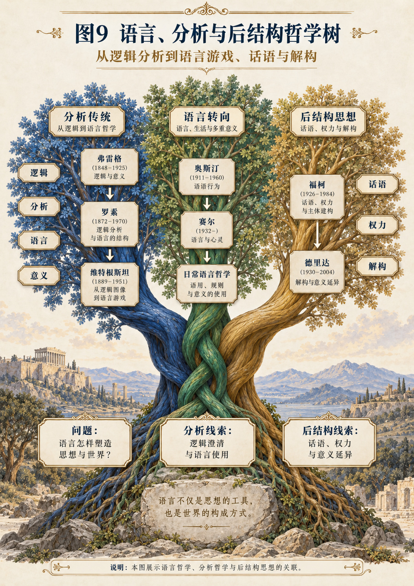

CHAPTER 49
第四十九章 维特根斯坦：从逻辑图像到语言游戏
同时保存早期逻辑图像与后期语言游戏的问题差异。
一 同一句“好了”，为什么可以是不同的行动
在厨房里，“好了”可能报告饭已经煮熟；在会议上，它可能结束争论；在安慰中，它可能请求对方暂时停止自责；在不耐烦的交谈里，它又可能表示拒绝继续听下去。字面没有变，发生的事情却不相同。
构拟这个例子，不是为了证明意义永远任意，而是为了使问题变得具体：我们凭什么确定某次言说完成了什么？声音和字形不足以独自回答，但情境也不是一个可以无限追加的解释箱。需要检查参与者正在做什么、此前怎样交谈、接下来允许什么回应，以及什么会被算作误解。
维特根斯坦的前后期思想，为这种检查提供了不同入口。把他直接挂在“语言环境”一枝，会遮蔽其早期对逻辑表达的严格要求，也会错过后来对这种要求的重新审查。[P49a；P49b]
二 先研究一个命题怎样能够描画事实
《逻辑哲学论》中的图像，不只指视觉上的画。一个由符号构成的配置，也可以表现对象之间的一种可能配置。符号为什么能够如此使用，是早期维特根斯坦的中心问题之一。[P49a，2.1—2.2]
用一个有限模型说明：桌上有红块和蓝块，红块位于蓝块左边。纸上用甲代表红块，乙代表蓝块，再约定“甲＜乙”表现左于关系。这里至少有对象、记号、对应约定和排列关系。只保留两个记号，却不保留对应与配置，就不能表达原来的事实。
从SDE重构，表达的显露为S，构造与读解为D，使记号能够代表对象的规则及可表现关系为E。重要的不是给三个名字配上三个字母，而是要求：改变对应或排列，读出的命题就可能改变。
三 能表示一个状态，不等于所表示状态真实
上述模型允许“甲＜乙”，也允许“乙＜甲”。两句话都具有可理解的构造，但在所设定的现实摆放中，不能同时为真。表达的可能性和表达的真实性因此属于不同检验。
这是一个能够实际检查的小结论：给定对象映射与关系解释，可以逐项确定句子描述什么；给定桌面状态，才能进一步判断描述是否符合。前者不能替代后者。
对于发生树，这一区分直接约束“生成”的强度。把一个哲学体系翻译成S、D、E，至多先证明它可以在这种语言中被表示。若要证明其核心命题成立，仍须给出相应前提和论证。语言容纳能力不等于本体论正确性。
四 网格可以覆盖图像，却不能因此证明世界由网格组成
维特根斯坦在讨论科学描述时使用网格的比喻：不同形式的网可以用于描述图像，具体采用何种网格与描述方式有关。[P49a，6.341—6.342] 这对本书格外重要。
设一幅画有一百个位置。我们可以用一百个小方格记录每格的颜色，也可以把相邻位置合成较大区域，再增加内部差异信息。两种表示都可能完整保存这幅画。由此不能推出画中的事物本来就是第一种格子的形状。
SDE九宫格也必须接受这项检验。把所有材料填进格子，只证明能够组织材料；只有当划分能让此前混淆的差别显露、产生受约束的推断，并容许失败，才获得进一步的理论意义。树的覆盖范围不是它独占世界结构的证明。
五 早期的边界并不是把人生一律判成无用
《逻辑哲学论》的末尾讨论可说、不可说及哲学说明自身的地位；其中对于生活问题的处理，不能简化为“科学能够说出的以外都没有价值”。[P49a，6.52—7]
若一个人问“怎样把机器运行得更快”，与问“我是否愿意把整个人生交给这项事业”，两者需要的回答方式可能不同。后一问题不因为不能化成一个测量命题，就自动消失。
发生树应保存这种提问层次，而不是把所有困难都强制翻译成参数优化。一个形式化模型可以澄清选择中的依赖，却不因此替当事人承担承诺。符号的能力边界，本身就是哲学工作的部分内容。
六 后来的转向：不要先规定一切语言必须是什么
《哲学研究》不再用一种单一图式统摄全部语言活动，而反复考察命名、命令、报告、游戏和规则等具体做法。第43节关于意义与使用的表述，明确限定于一大类情形，而不是宣告一个毫无例外的万能定义。[P49b，第43节]
因此，“意义就是使用”若被当成不许追问的口号，会违背其分析方向。我们仍要问：哪一种使用，什么被算作成功，参与者如何学习，错误怎样被识别？
在SDE语言中，这相当于拒绝让S中的“意义”脱离D中的实际运作及E中的共同标准。但它不是要求词语每次出现都重新创造全部意义。稳定的习惯和规则，正是具体交流能够接续的条件。
七 一个命名动作为什么不能独自决定名字的全部含义
设教师指着一个红色三角形说“塔”。学生可能以为这个词指红色，也可能以为指三角形，或者指这块具体卡片。单独的指点没有排除这些解释。
随后教师拿出蓝色三角形，又拿出红色圆形，通过分类、纠正和回应，学生逐渐知道应该怎样继续。这里变化的不只是记忆中的一个词条，也包括区分特征的方法。
这个构拟模型显示，E中的背景知识并非被动陪衬。某个形状之所以作为命名对象显露，取决于已经建立的对比和继续使用方式。纠缠并不意味着不可分析，而是分析单位需要从共同活动中确定。
八 家族相似：共同名称不总要求同一个隐藏成分
《哲学研究》借游戏等例子说明，概念成员之间可以呈现交叠的相似，而不必由一个处处相同的单一特征维系。[P49b，第65—68节]
可以构造一个严格的小模型。甲具有特征p、q，乙具有q、r，丙具有r、p。每两者之间都有共同项，但三者共同交集为空。这证明“任意两项相似”不推出“所有项共享同一特征”。
这不是证明所有概念都没有本质，而是拆除一条未经检查的推断。对SDE而言，同一主干上的哲学家可能在不同边上相似。不能因为尼采与德勒兹共享某种差异问题、尼采与叔本华共享某种欲求问题，就推定三者接受同一套本体论。
九 规则需要解释，但不能只有无穷解释
如果每次应用规则，都要先解释这次解释怎样正确，解释将不断后退。维特根斯坦讨论的规则问题，并不是最终宣布“任何做法都同样正确”，而是把注意力转到能够实际继续的活动和训练。[P49b，第199—202节]
学生抄出了公式，不等于已经知道在新问题里怎样使用。可是只会机械做题，也不必然意味着完全没有理解。需要设计有差异的新情形，观察他能否识别该规则何时适用、何时不适用。
因此，D不只是命题之间的书面推导，还包括使用规则的能力。E则包含纠错标准、示例和共同实践。S中的正确答案，必须与这些条件一起解释，不能仅凭表面结果给能力下永久结论。
十 私人语言问题，不是在否认私人感受
在私人记号日记的讨论中，维特根斯坦追問的是：当“似乎记得正确”与“确实使用正确”没有可区分标准时，所谓规则如何发挥作用。[P49b，第258节]
这不等于一个人不能写私人日记，也不等于痛苦必须被多数人承认才真实。用共同语言独自记事，与设想一种原则上只有自己能够判定、又无法区分误用的记号，是不同问题。
SDE重构在这里必须小心：不能写成“没有群体便没有心灵”。更合适的命题是，稳定使用某种规则，需要说明正确与错误的区分怎样可能；“我觉得如此”本身不总足以承担全部检验。
十一 共同标准不等于多数票制造真理
人们可以共同学会计算，却共同把一道题算错；也可以共同使用某个名称，却对它指向的事情缺乏证据。语言实践提供判断能够发生的条件，不保证每个判断都正确。
这使本章与弗雷格、罗素的支脉重新相连。心理确信、社会接受、语法可理解和事实成立，不能合并成一个东西。维特根斯坦并没有给“大家都这样说”提供无限授权。
发生树也不能把高点击量当作真理指标。点击告诉我们哪些入口正在被使用，至多是读者活动的一部分记录。它不能替原典准确性、推论有效性和生活后果作出判定。
十二 一次家庭争论中的规则不一致
构拟场景：甲认为尊重意味着不在自己讲述困难时立即提出建议；乙认为尊重意味着认真帮忙找办法。于是乙越努力给建议，甲越觉得不被理解；甲越拒绝，乙越觉得自己的关心被否定。
这里不能直接裁定一方“情绪化”、另一方“理性”。首先要把同一个词在两种活动中的要求说清楚。甲正在请求倾听，乙却把交谈当作共同解决任务。双方使用同一评价词，却没有共享当前的活动类型。
可以先约定这次交谈是倾听还是讨论办法，再观察结果。该调整不保证所有关系困难消失，也不能遮盖持续伤害；它只检验一项具体假设：某部分冲突是否来自对“此刻在做什么”的不同理解。
十三 SDE术语自身也应进入这场检验
若读者不理解E，作者不能仅回答“你还停留在旧逻辑”。这是一种把理解标准封闭在作者认可之中的做法。更有效的说明必须给出相邻例子、边界、反例以及改变条件后会出现的差别。
例如，若“特征纠缠”与“复杂关系”在所有实际分析中产生完全相同的区分和判断，就还没有说明新词增加了什么。若它能揭示端点特征本身在活动中形成，并要求相应证据，差别才开始可检验。
所以维特根斯坦不是树根的敌人，也不是被树根消化以后便不再发言的节点。他保留一项持续追问：我们正在用这个词做什么？它让哪个问题更清楚，又把哪个问题藏起来了？
十四 从母结构到两种语言研究方式
早期重构可写为：限定S为可表述状态，限定D为构造和解释命题，限定E为表示关系及逻辑可能性条件，再区分表达能力与事实符合。要得到完整早期体系，还需要其特有的逻辑和表达边界论证。
后期重构则限定研究对象为具体语言活动，让E包含共同使用标准，让D包含训练、纠正与继续，让S中的意义在活动里显露。由此能重建若干分析，但不能仅凭三方程推出所有语言游戏的具体规则。
两种重构之间的转变，并非从“没有E”到“有E”这么简单。它涉及对什么可以作为统一解释条件的重新判断，以及哲学应当如何处理实际用语的变化。
十五 在树上保留一次自我修订
本章的主节点有两个时期入口。点击“图像与逻辑”，进入命题表达、配置和边界；点击“使用与规则”，进入游戏、训练、家族相似和理解。两入口相连，却不被拼成一套从未改变过的答案。
这给动态树一项设计要求：节点允许版本和内部转折。否则，我们一边宣称思想发生，一边又把思想家锁成单一图标。哲学家的自我修改，往往比一个漂亮的定位公式更值得保留。
离开维特根斯坦这一枝时，读者不需要开始怀疑每句话都没有意义。相反，可以更具体地问：我们正在进行哪一种活动，什么算作下一步，怎样知道自己误解了？当这些问题被澄清，争论有时才能真正开始，而不再围着同一个词反复绕行。
留给读者的问题 争论中的词，究竟在双方各自的活动里做什么？